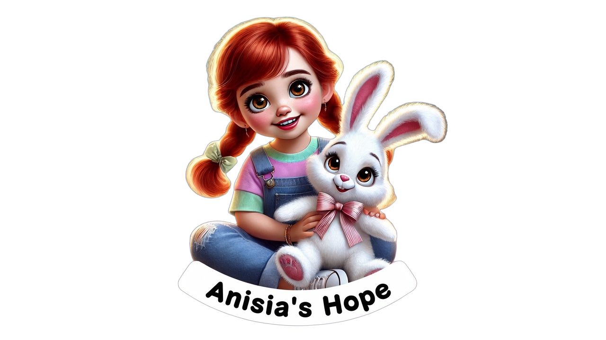

Support
Support, equipment, therapies, and services for people affected by Batten disease / NCL — including all forms families know as CLN1–CLN14.
UK registered charity · 1219714
Anisia's Hope is here so families facing any form of Batten disease are less alone, better informed, and supported. We also fund research and raise awareness.
Batten disease is also called neuronal ceroid lipofuscinoses / NCLs, including CLN1–CLN14.
Online giving opens soon. Donate

For families
Whether you have just received news or want to know what we do — these paths are for you. For plain-English answers at any hour, see the FAQ (we reply to email within a few working days — we are not a 24/7 helpline).
Warm, practical first steps when Batten disease enters your family’s life — and how to reach us.
Go to newly diagnosed → Our workSupport, research, and awareness — the three ways Anisia's Hope stands with families.
See how we help → Reach usEmail the charity team. We aim to reply within a few working days — you do not have to wait alone.
Contact us →How we help
As a Charitable Incorporated Organisation, our work follows three charitable objects (full wording on About).
Support, equipment, therapies, and services for people affected by Batten disease / NCL — including all forms families know as CLN1–CLN14.
Grants for research into causes, treatment, prevention and cure, and publishing useful results. When we award grants, trustees will prioritise NCL research with a particular focus on CLN2. Research into cure is not a claim that a cure exists.
Education for the public, medical professionals, and carers — including early diagnosis and available treatments.
We do not give medical advice. Always speak to a qualified clinician about diagnosis and care. Full objects: About.
Programmes
We are an early-stage CIO. These programme areas are in development — not yet delivering measured outcomes. We will update this page honestly as work goes live.
Practical pathways for families — including newly diagnosed signposting and ways to reach us. First family-support pathway is among our near-term aims.
Grant-making under published trustee policy (particular focus on CLN2). See Governance. No awards yet.
Clear information for families and professionals — evidence sources and medical-advisor review for clinical content (how we keep education accurate).
Our beginning
It began when Anisia was diagnosed with Batten disease. That moment revealed how little clear information there can be — and how lonely it is to navigate a journey without a map and without a clear destination.
Anisia's Hope exists to change that. We are a registered UK charity standing with families facing any form of Batten disease — so they are less alone, better informed, and supported. We also fund research and raise awareness.
Read more about us“To us, these are not small things. They are victories.”
From Anisia’s family journey
Charity number
1219714
Give
Your gift helps us pursue our charitable objects — support and services, research grants, and education. Every contribution counts.
Online giving opens soon.